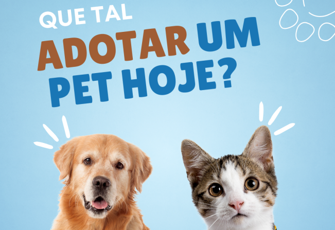

Adote um amigo de quatro patas e faça a diferença na vida dele!
A adoção é uma maneira linda de dar uma nova vida ao seu pet. Faça parte dessa ação e adote um amigo hoje mesmo!
Não é por amar demais os pets, que falamos repetidamente que ter um em nossa vida é a melhor coisa que poderia acontecer. A nossa saúde mental é algo que devemos cuidar sempre, sem deixar para depois, e um animal de estimação pode ser a resposta para preencher a vida com muito amor, companheirismo e carinho. O Setembro Amarelo é um mês especial para a prevenção de suicídios, em que grande parte é acometido por pessoas com transtornos mentais, como a depressão. E se isso está lhe afetando, toda ajuda é bem-vinda! Especialmente para quem sente solidão há um bom tempo, essa pode ser uma das formas de cuidar desse problema. Se você está pensando muito em adotar um novo amigo, pode se preparar para uma qualidade de vida ainda melhor. Confira mais no texto abaixo.
Ciência comprova
É verdade quando é dito que os pets auxiliam a diminuir efeitos do estresse, ansiedade e depressão. São vários os estudos, em diversas partes do mundo, que revelam melhora no tratamento de pessoas com distúrbio depressivo que adotaram pets. Apenas a presença desses animais tão amorosos já contribui para diminuir o sentimento de solidão, além de também poder ajudar na autoestima da pessoa que está sofrendo deste mal, trazendo de volta a disposição e uma sensação positiva para os dias.
Tem dúvidas ou quer saber mais sobre o processo de adoção? Fale conosco no WhatsApp!
Clique aqui para falar conosco no WhatsApp